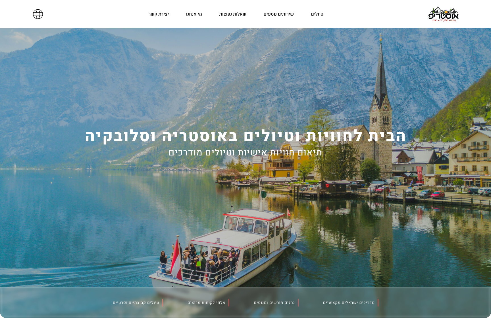
How I Redesigned Austrip to Boost Booking
The original Austrip platform was outdated, cluttered, and lacked visual order, which hindered the booking process. I redesigned the interface from the ground up. By simplifying the flow and adding clear trust signals, I transformed a chaotic interface into a seamless, high-converting digital journey.
Problem
The original platform was outdated, cluttered, and lacked visual order, resulting in a chaotic interface that hindered the booking process.
Solution
A ground-up redesign of the interface, simplifying the flow and adding clear trust signals throughout the booking journey.
Impact
A seamless, high-converting digital journey that turns a confusing experience into one that builds user trust from the first click.
Research & Competitive Analysis
To address these challenges, I conducted a competitive analysis of leading travel platforms to understand industry standards for user-centric design. I evaluated key players in the travel industry, focusing on how they structure complex information, integrate social proof, and design clear calls to action.
Key Findings
- Visual Trust: Top-performing sites use consistent visual hierarchy to build user confidence immediately upon landing.
- Scannable Content: Successful platforms prioritize scannability by using structured lists, icons, and concise headings rather than dense text blocks.
- Transparency: Clearly displayed logistics like pickup details and policies like cancellation terms are essential to reducing user anxiety during the booking process.
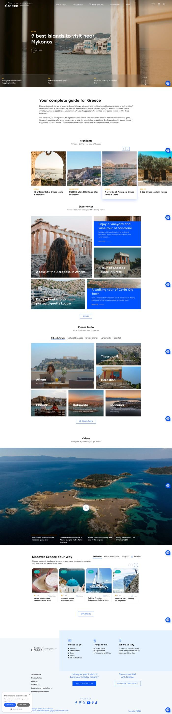
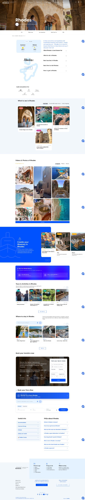
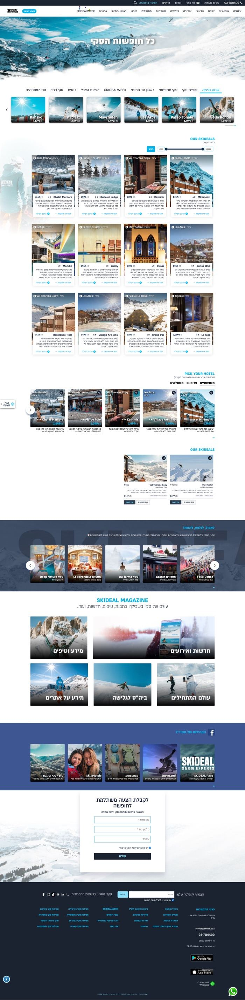
The Process & UX Decisions
Following the research phase, I focused on translating insights into a clean, intuitive design. My approach was guided by two primary goals: reducing cognitive load and building user trust.
- Redefining Visual Hierarchy: I completely restructured the product page. By moving critical information like price, availability, and cancellation policies to the top, I ensured users can find what they need without scrolling.
- Enhancing Scannability: I replaced dense text paragraphs with structured lists and icon-based sections (such as "What to Bring" and "Essential Info"). This allows users to digest the content at a glance.
- Integrating Social Proof: Adding authentic user reviews and star ratings was a strategic decision to validate the experience and reduce booking anxiety.
- Simplified Navigation: I implemented a clearer, more consistent navigation flow, ensuring that key actions like "Check Availability" or "Book Now" are always within reach.
Early Wireframes
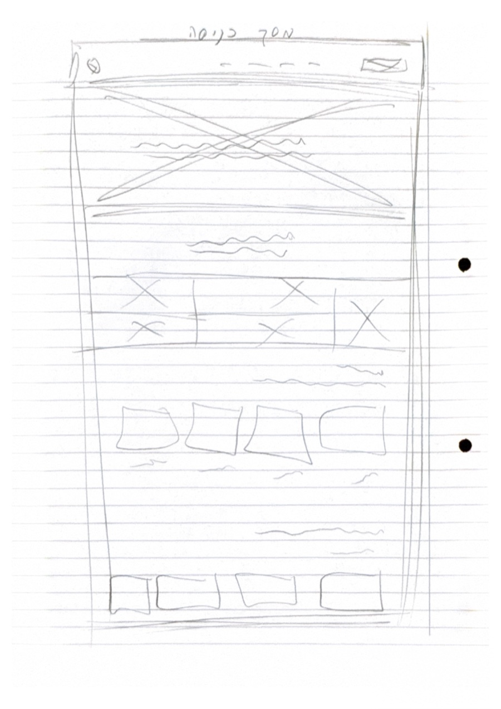
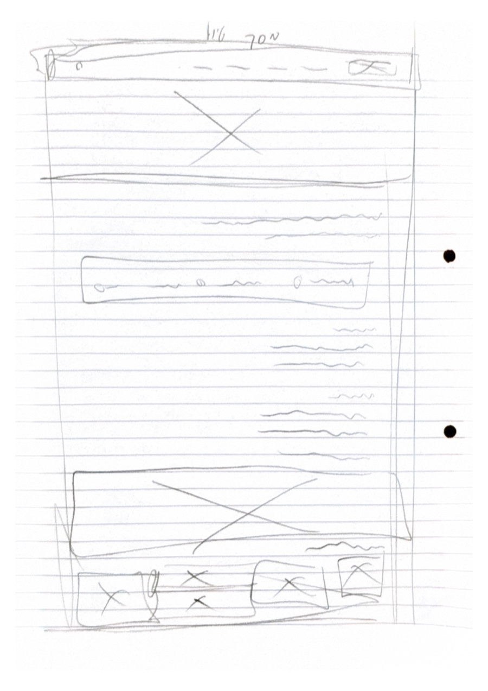
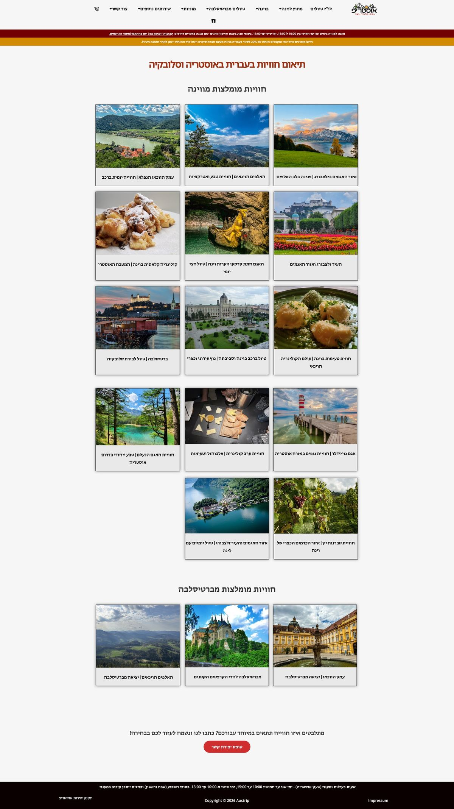
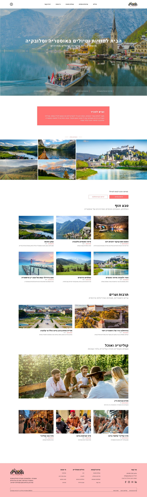
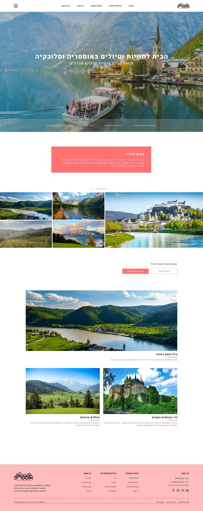
Tour Detail & Booking Flow
The individual tour page told the same story as the homepage. The old layout buried the price and the call to action under dense paragraphs, with a long booking form that repeated itself twice on the same page. I rebuilt it around a clear hierarchy: the price and a single "Book now" action up front, key facts available at a glance, and the details that matter (itinerary, what to bring, cancellation policy) organized into short, scannable sections instead of walls of text.
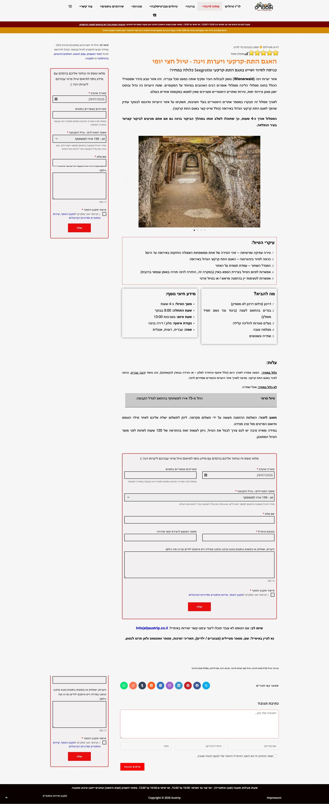
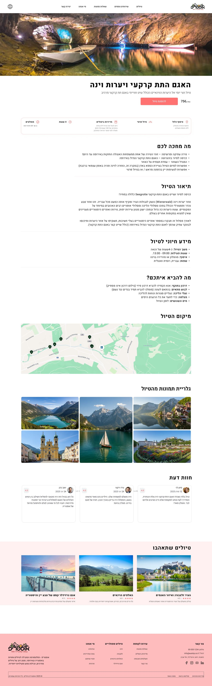
What I took away
Simplicity builds trust: The visual clutter on the old site wasn't just an aesthetic problem, it created uncertainty for the user. Removing noise makes people trust the process more, even without changing a single word of content.
Research before redesign: Analyzing competitors like Discover Greece and SkiDeal helped me understand the industry standard before I started designing, instead of guessing what "looks good."
Small friction points add up: A booking form that repeated itself twice on the same page seemed like a minor detail, but it's exactly the kind of thing that makes users drop off. Fixing small friction points like this turned out to be a big part of the work.
Thanks for reading!